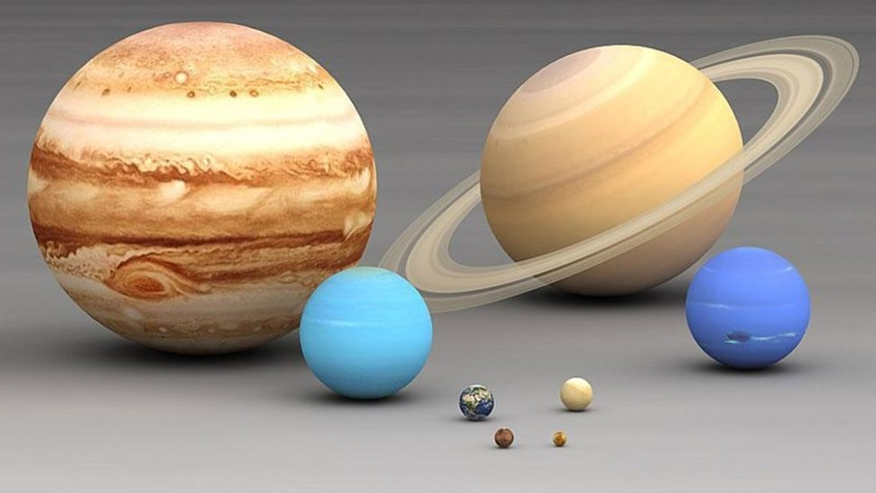
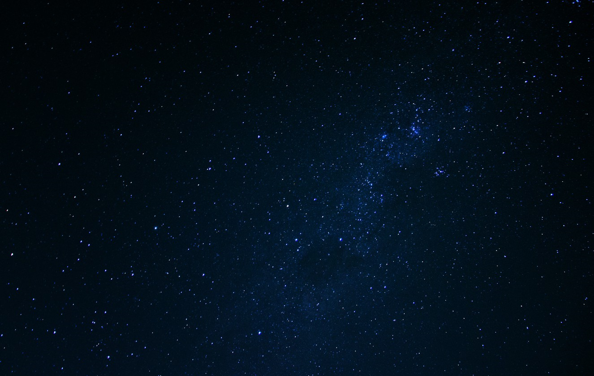
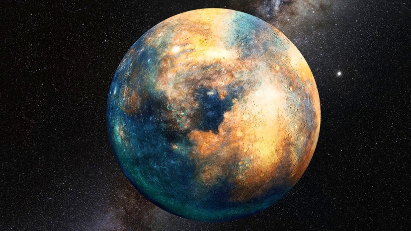

Земля, на которой мы живём, является одной из многих планет во Вселенной. Поэтому некоторое представление о планетах мы имеем. Но только все они очень непохожи друг на друга.

Планета – это твёрдый и холодный объект во Вселенной. Планета движется, "летит" вокруг звезды. Например, Земля движется вокруг Солнца. Окружность вокруг звезды, по которой движется планета, называют орбитой. Если на одной орбите присутствуют и другие объекты, то это уже не планета, а астероид.
Сами по себе планеты не светятся, но они видны в темноте благодаря тому, что их освещают звёзды. Планеты отражают звёздный свет, а нам только кажется, что светятся сами планеты.
Наши предки первоначально называли планеты «блуждающими звёздами» и выделяли всего пять планет: Венеру, Меркурий, Марс, Сатурн и Юпитер. Землю к ним не относили. Она долгое время считалась центром Вселенной. Также не называли планетами Солнце и Луну.

В 18 веке стало известно о существовании планеты Уран, в 19 веке люди увидели планету Нептун. Тут же у многих учёных зародилось мнение, что существует и девятая планета солнечной системы. В 1930 году Клайд Томбо доказал существование Плутона. Он считал Плутон планетой, но многие были с этим не согласны.
Дело в том, что у Плутона очень необычная орбита, да и по размерам он гораздо меньше других планет (даже меньше Луны). Кроме того, у него был обнаружен пояс из астероидов, которые оказались очень похожими на Плутон, отличались они только по величине. Таким образом, выяснилось, что эта «планета» всего лишь самый большой астероид из своего пояса. С 2006 года Плутон называется "карликовой планетой".
Сегодня же известно, что в солнечную систему (помимо Солнца и Луны) входят следующие планеты: Меркурий, Марс, Земля, Венера, Сатурн, Юпитер, Уран и Нептун.

1. Меркурий – раскаленный, но обладает льдом
Первой планете от Солнца Меркурию удалось припрятать ледяные запасы на поверхности. Кажется, что это просто нереально, но лед скрывается в постоянно затененных кратерных формированиях, куда никогда не падают солнечные лучи. Полагают, что источником стали кометы. MESSENGER зафиксировал ледяные точки на северном полюсе и заметил органику, выступающую строительным блоком для жизни.
2. У Венеры нет спутников
Первые две планеты Солнечной системы лишены спутников, что кажется неожиданным, ведь у остальных есть. У Сатурна их вообще 60! А некоторые выступают захваченными астероидами. Что не так с этой парой? Никто точно не знает, но некоторые считают, что ранее у Венеры была луна, которая врезалась в планету или же поглотилась Солнцем.
3. Древний Марс обладал густым атмосферным слоем
За богатой на жизнь Землей скрывается печальная холодная пустыня – Марс. Но присмотритесь ближе, и вы заметите овраги, способные сформироваться под действием воды. Полагают, что ранее планета обладала более плотной атмосферой. Но где она? Возможно, все дело в солнечном влиянии, которое постепенно вырвало легкие молекулы.
4. Юпитер – убийца комет
Юпитер выступает самой большой планетой в Солнечной системе, массивнее Земли в 318 раз. Поэтому любые приближенные кометы просто поддаются ее влиянию и летят к верной смерти. В древности именно Юпитер отвечал за огромное количество комет во внутренней системе. И он уничтожил комету Шумейкера-Леви 9 в 1994 году.
5. Сколько лет кольцам Сатурна?
Интересные факты о планетах Солнечной системы не могли обойти этот момент. Вокруг Сатурна сконцентрирована шикарная система колец, представленная ледяными и каменными осколками. Их сумели заметить еще в 1600-х в первом телескопическом обзоре. Но сколько им лет? Точно никто не знает. Некоторые считают, что они сформировались миллиарды лет назад из солнечной туманности, а другие грешат на относительно недавнее уничтожение крупного спутника.
6.Сверхзвуковые ветры на Нептуне
Земляне периодически вынуждены сталкиваться с ураганами, но они никогда не сравнятся с ситуацией на Нептуне. Там ветер разгоняется до 1770 км/ч. Чтобы вы понимали, это быстрее скорости звука.